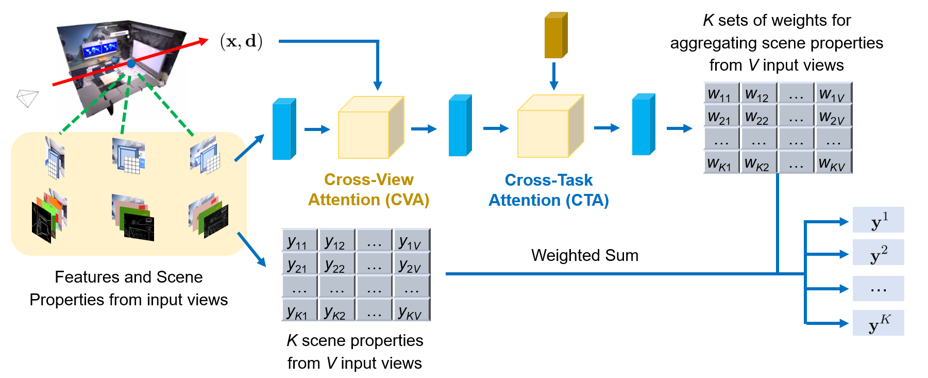
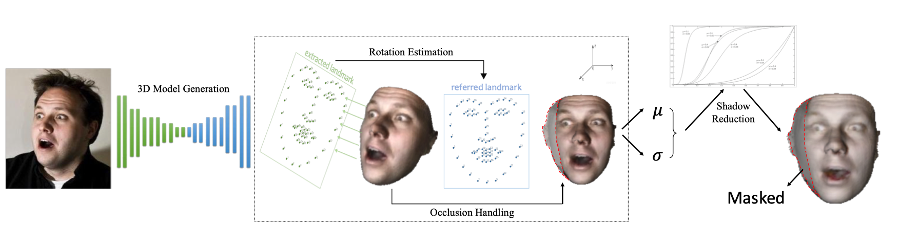

Research Projects
-


Multi-task visual learning is a critical aspect of computer vision. Current research, however, predominantly concentrates on the multi-task dense prediction setting, which overlooks the intrinsic 3D world and its multi-view consistent structures, and lacks the capability for versatile imagination. In response to these limitations, we present a novel problem setting -- multi-task view synthesis (MTVS), which reinterprets multi-task prediction as a set of novel-view synthesis tasks for multiple scene properties, including RGB. To tackle the MTVS problem, we propose MuvieNeRF, a framework that incorporates both multi-task and cross-view knowledge to simultaneously synthesize multiple scene properties. MuvieNeRF integrates two key modules, the Cross-Task Attention (CTA) and Cross-View Attention (CVA) modules, enabling the efficient use of information across multiple views and tasks. Extensive evaluation on both synthetic and realistic benchmarks demonstrates that MuvieNeRF is capable of simultaneously synthesizing different scene properties with promising visual quality, even outperforming conventional discriminative models in various settings. Notably, we show that MuvieNeRF exhibits universal applicability across a range of NeRF backbones.
Our paper was accepted to ICCV 2023.
-

Object discovery -- separating objects from the background without manual labels -- is a fundamental open challenge in computer vision. Previous methods struggle to go beyond clustering of low-level cues, whether handcrafted (e.g., color, texture) or learned (e.g., from auto-encoders). In this work, we augment the auto-encoder representation learning framework with two key components: motion-guidance and mid-level feature tokenization. Although both have been separately investigated, we introduce a new transformer decoder showing that their benefits can compound thanks to motion-guided vector quantization. We show that our architecture effectively leverages the synergy between motion and tokenization, improving upon the state of the art on both synthetic and real datasets. Our approach enables the emergence of interpretable object-specific mid-level features, demonstrating the benefits of motion-guidance (no labeling) and quantization (interpretability, memory efficiency).
Our paper was accepted to CVPR 2023. See the paper here.
-


We studies the problem of object discovery -- separating objects from the background without manual labels. Existing approaches rely on appearance cues, such as color, texture and location, to group pixels into object-like regions. However, by relying on appearance alone, these methods fail to reliably separate objects from the background in cluttered scenes. This is a fundamental limitation, since the definition of an object is inherently ambiguous and context-dependent. To resolve this ambiguity, in this work we choose to focus on dynamic objects -- entities that are capable of moving independently in the world.
We then scale the recent auto-encoder based frameworks for unsupervised object discovery from toy, synthetic images to complex, real world scenes by simplifying their architecture, and augmenting the resulting model with a weak learning signal from a motion segmentation algorithm. We demonstrate that, despite only capturing a small subset of the objects, this signal is enough to bias the model, which then learns to segment both moving and static instances of dynamic objects. We show that this model scales to our newly collected, photo-realistic synthetic dataset with street driving scenarios. Additionally, we leverage ground truth segmentation and flow annotations in this dataset for thorough ablation and evaluation. Finally, our experiments on the real-world KITTI dataset demonstrate that the proposed approach outperforms both heuristic- and learning-based methods by capitalizing on motion cues.
Our paper was accepted to CVPR 2022. See the paper here.
-


Comprehensive 3D scene understanding, both geometrically and semantically, is important for various real-world applications such as robot perception. Most of the existing work has focused on developing data-driven discriminative models for different scene analysis problems. In this project, we provides a new way for scene analysis from a generative modeling perspective, by leveraging the recent progress on implicit 3D representation and neural rendering.
Building upon the great success of Neural Radiance Fields (NeRFs), we develop scene analysis by synthesis with NeRF (SaS-NeRF) that is able to not only render photo-realistic RGB images from novel viewpoints, but also render various accurate scene properties (e.g., appearance, geometry and semantics) paired with the synthesized images. By doing so, we facilitate addressing a variety of scene understanding tasks under a unified framework, including semantic segmentation, surface normal estimation, reshading, 2D-keypoint detection, and edge detection. Our SaS-NeRF framework can be a powerful tool for bridging generative learning and discriminative learning and thus be beneficial to the investigation of a wide range of interesting problems, such as studying task relationships from a generative modeling perspective, facilitating downstream discriminative tasks as ways of data augmentation, and serving as auto-labeller.
Our paper was accepted to WACV 2023. See the paper here.
-


Generative modeling has recently shown great promise in computer vision, but it has mostly focused on synthesizing visually realistic images. In this project, motivated by multi-task learning of shareable feature representations, we consider a broader problem of learning a shared genera- tive model that is useful across various visual perception tasks.
we propose a general multi-task oriented generative modeling (MGM) framework, by coupling a discriminative multi-task network with a generative network. While it is challenging to synthesize both RGB images and pixel-level annotations in multi-task scenarios, our framework enables us to use synthesized images paired with only weak annotations (i.e., image-level scene labels) to facilitate multiple visual tasks. Experimental evaluation on challenging multi-task benchmarks, including NYUv2 and Taskonomy, demonstrates that our MGM framework improves the performance of all the tasks by large margins, consistently outperforming state-of-the-art multi-task approaches.
Our paper was accepted to ICML 2022. See the paper here.
-


Generative modeling has recently shown great promise in computer vision, but its success is often limited to separate tasks. Motivated by multi-task learning of shareable feature representations, we consider a novel problem of learning a shared generative model across various tasks. We instantiate it on the illustrative dual-task of joint few-shot recognition and novel-view synthesis: given only one or few images of a novel object from arbitrary views with only category annotation, we aim to simultaneously learn an object classifier and generate images of the object from new viewpoints.
To this end, we propose bowtie networks that jointly learn 3D geometric and semantic representations with feedback in the loop. Experimental evaluation on challenging fine-grained recognition datasets demonstrates that our synthesized images are realistic from multiple viewpoints and significantly improve recognition performance as ways of data augmentation, especially in the low-data regime. We further show that our approach is flexible and can be easily extended to incorporate other tasks, such as style guided synthesis.
In this work, I am responsible for designing the whole architecture and fine tune the network. Our paper was accepted to ICLR 2021 as a poster paper. Find the paper here.
-


Electron tomography is a widely used 3D macro-molecular structure reconstruction technology. The alignment of the tilt series is one of the most improvement processes that determine the tomography reconstruction quality. However, the data process for marker-free electron tomography remains a challenge, especially when the distortion of the projection has been proved and the correction becomes necessary.
During this projection, we propose a marker-free algorithm for the alignment of the tilt series. We first make an automatic detection and tracking of the stable ultrastructures with a deep neural network. We then refine the local patches of the projection parameters and produce the reprojection invariant landmarks. Finally, we rebuild the 3D cellular structure based on the landmarks and the projections. The proposed method obtains better performances than other state-of-the-art reconstruction algorithms.
During this work, I propose and apply a deep neural network that can extract the deep features of each projection and find the interesting patches based on that.
Our paper was accepted to ISMB 2019. Find the paper here.
-


Facial expression recognition is an important topic because it is the basis for many AI tasks. Numerous studies have been conducted in this area under the assumption that the human subject is always properly facing the camera. Such a condition, however, is too rigid because, in many real-life situations, the human face is not directly in front of the camera and maybe under extreme light conditions. However, few of the existing methods have considered the orientation of a face, thus limiting the performance of the previous models.
To tackle this issue, we explore the fact that human expression is independent of the facial orientation. On the basis of this assumption, we propose a novel method to re-align facial images by reconstructing a 3D face model from a single image. Moreover, we implement an end to end deep neural network for single image facial expression recognition tasks, which utilize learning-based features, landmark features, and 3D features. A comprehensive evaluation toward three real-world datasets illustrates that the proposed model outperforms the state-of-the-art techniques in both large-scale and small-scale datasets. The superior of our model on effectiveness and robustness is also demonstrated in both laboratory conditions and wild images.
This is an individual research project I took part in when I was exchanging in ANU. I am responsible for the whole project under the supervision of Shaodi. Our paper was accepted to ICCV 2019 workshops
Find the paper here.